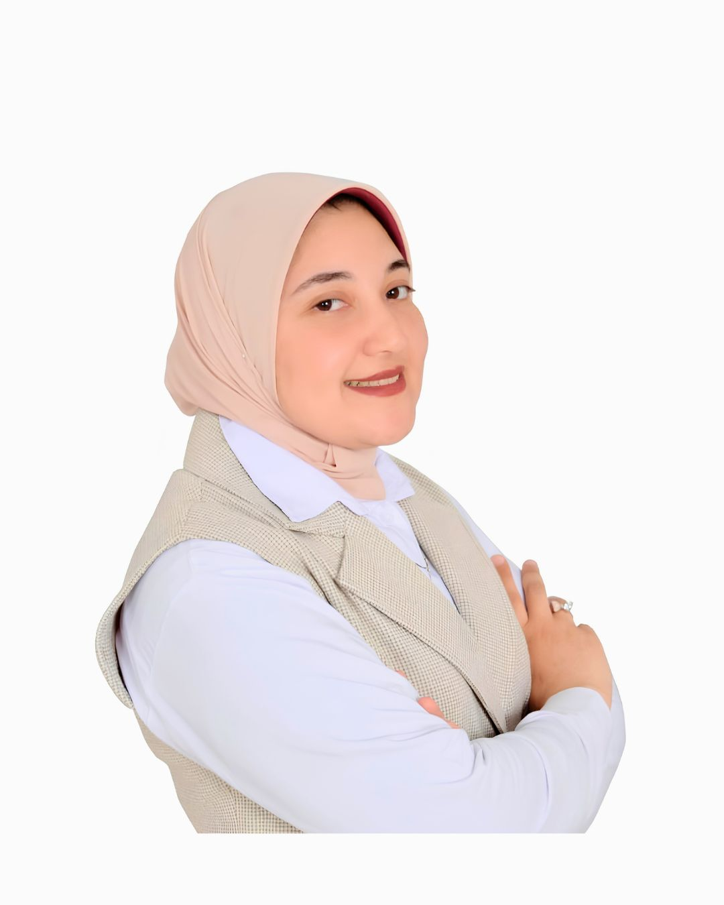
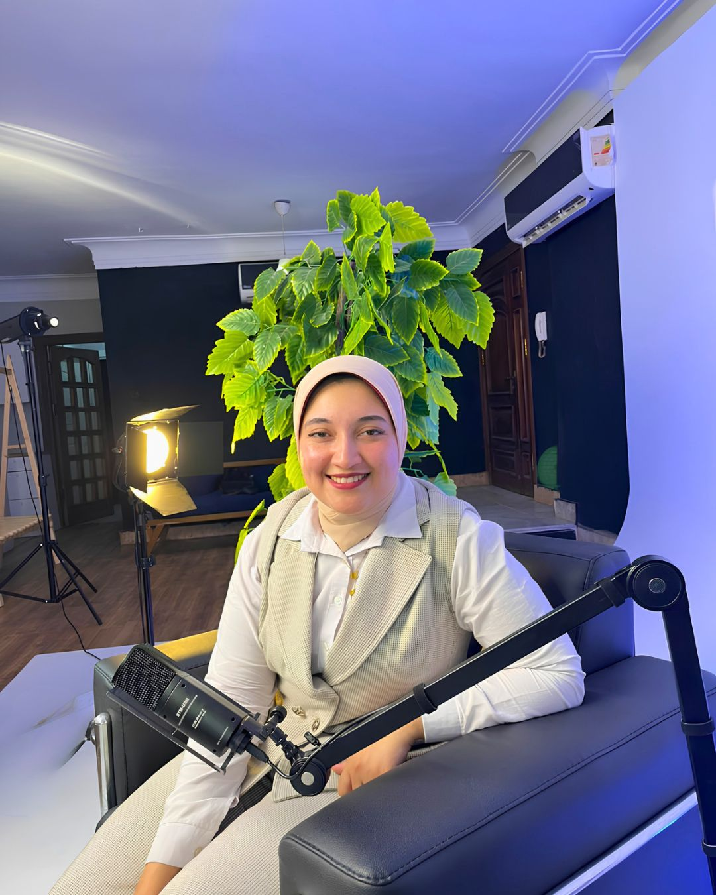

جلسات أونلاين فردية
جلسة فيديو خاصة من غرفتك، بنفس عمق ودقة الجلسة الحضورية. مناسبة لمين مش قادر يتفرغ أو يفضّل الخصوصية.
الأكثر طلباًعيادة نفسية اكلينيكية — أونلاين وفي العيادة
أنا أ/شروق عبدالناصر، أخصائية نفسية اكلينيكية. مهمتي إني أكون معاكِ في رحلة فهم نفسك والتعامل مع القلق والتوتر والضغوط اليومية، بأسلوب علمي وإنساني في نفس الوقت — من أي مكان، في أي وقت يناسبك.


من أنا
أنا أ/شروق عبدالناصر، حاصلة على درجة الأخصائي النفسي الإكلينيكي، وعملت مع حالات متنوعة جداً — من القلق والتوتر، للاكتئاب، لمشكلات العلاقات والأزواج، ولأزمات الثقة بالنفس وضغوط الحياة العملية.
لا أؤمن بتصنيف الناس في "خانة" واحدة. كل حالة لها قصتها، وأسلوبي العلاجي مرن يعتمد على أدوات اكلينيكية معتمدة (مثل العلاج المعرفي السلوكي) لكن مُكيّف على شخصك أنت، باللغة والثقافة اللي بتفهميها وتحسي بيها.
خدماتي
مش لازم تكون متأكدة من "اسم" المشكلة قبل ما تيجي. كفاية إنك حاسة إن في حاجة محتاجة شغل عليها.
جلسة فيديو خاصة من غرفتك، بنفس عمق ودقة الجلسة الحضورية. مناسبة لمين مش قادر يتفرغ أو يفضّل الخصوصية.
الأكثر طلباًلو حابة تجربة وجاهية في بيئة هادية ومُجهّزة، الجلسات الحضورية متاحة بمواعيد محدودة أسبوعياً.
أدوات عملية للتعامل مع نوبات القلق، التوتر المستمر، والأفكار اللي مش بتسيبك في حالك بالليل.
لو حاسة إن طاقتك خلصت أو إنك بقيتي بعيدة عن نفسك، نقدر نشتغل على استعادة الإحساس بالحياة تدريجياً.
لو شغلك بقى بياخد منك أكتر مما بيدّيك، نقدر نبني حدود صحية ونفهم سبب الإحساس بالاستنزاف.
اختبار سريع
اختاري المجال اللي حاسة إنه الأقرب لحالتك دلوقتي. الاختبار يستغرق دقيقتين، والنتيجة شخصية وسرية تماماً.
الخطوة الأولى — اختاري المجال
سؤال 1 من 5
آراء العملاء
"كنت حاسة إني تايهة وماليش أمل في حاجة تتغير. بعد جلسات قليلة بقيت أقدر أسمي اللي حاسة بيه، وده كان أول خطوة فعلية."

"حسيت بأمان من أول جلسة. مش حسيت إني بتقيّم، حسيت إني بتفهّم. ده فرق كبير عن أي حد جربت قبلها."


"الفرق إنها بتسمعك كويس قبل ما تتكلم. مش بس بتعالج، بتعلمك إزاي تفهم نفسك بنفسك بعد كل جلسة."

احجزي الآن
اختاري الطريقة الأسهل لك. كل المعلومات بتتبعت مباشرة لـ أ/شروق، وهتتواصل معاكِ لتأكيد الميعاد والتفاصيل خلال 24 ساعة.
من خلال الفورم أو واتساب مباشرة
هتتواصل معاكِ أ/شروق لتثبيت الموعد المناسب
أونلاين عبر فيديو خاص، أو حضورياً بالعيادة
عبر نموذج الحجز، اختاري الميعاد المناسب لك وهيوصل لـ أ/شروق فوراً.
أسئلة شائعة
نعم. الدراسات الحديثة أثبتت إن العلاج النفسي عن بعد بنفس فاعلية الجلسات الحضورية في أغلب الحالات، طالما الاتصال مستقر والخصوصية متوفرة. كثير من عملائي بيفضلوا الأونلاين لمرونته وراحته.
السرية المهنية هي أساس العلاقة العلاجية. كل ما يُقال في الجلسة لا يُشارك مع أي طرف ثالث إلا في حالات استثنائية ينظمها القانون والأخلاقيات المهنية (مثل وجود خطر مباشر على حياة)، وسيتم توضيح ذلك بالتفصيل في الجلسة الأولى.
لو حاسة إن شيء في حياتك بيأثر على نومك، علاقاتك، أو أدائك اليومي بشكل مستمر — مش لازم تنتظري الأمور "تتفاقم". جربي اختبار الوعي السريع في الموقع لو محتاجة نقطة بداية لفهم حالتك.
يختلف من حالة لأخرى. بعض الحالات بتحتاج جلسات محدودة لأزمة عابرة، وبعضها رحلة أطول. في الجلسة الأولى بنحدد معاً خطة تقريبية ونراجعها بشكل مستمر.
نعم، بشرط موافقة ولي الأمر والتواصل المسبق لتحديد الاحتياج بدقة قبل أول جلسة.